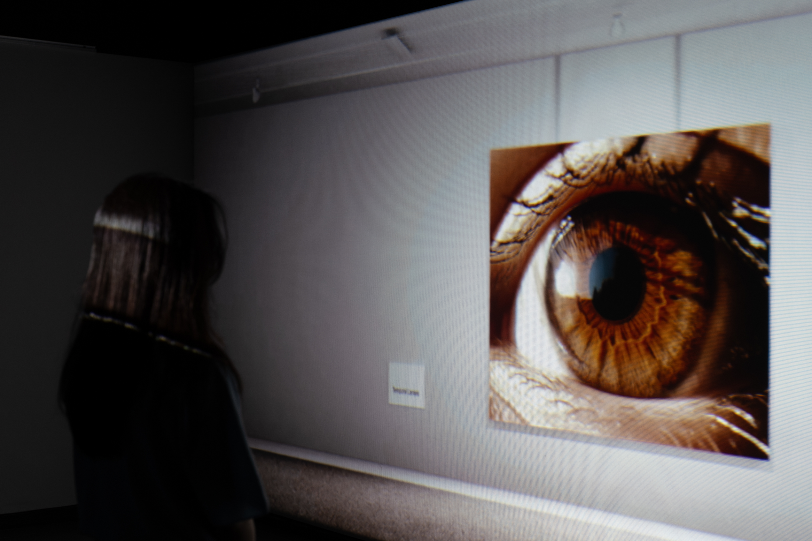
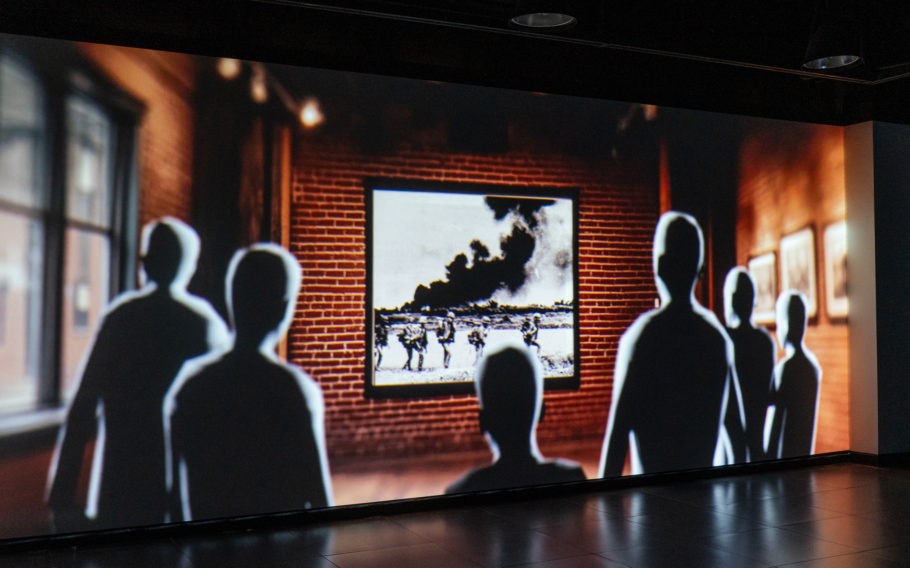
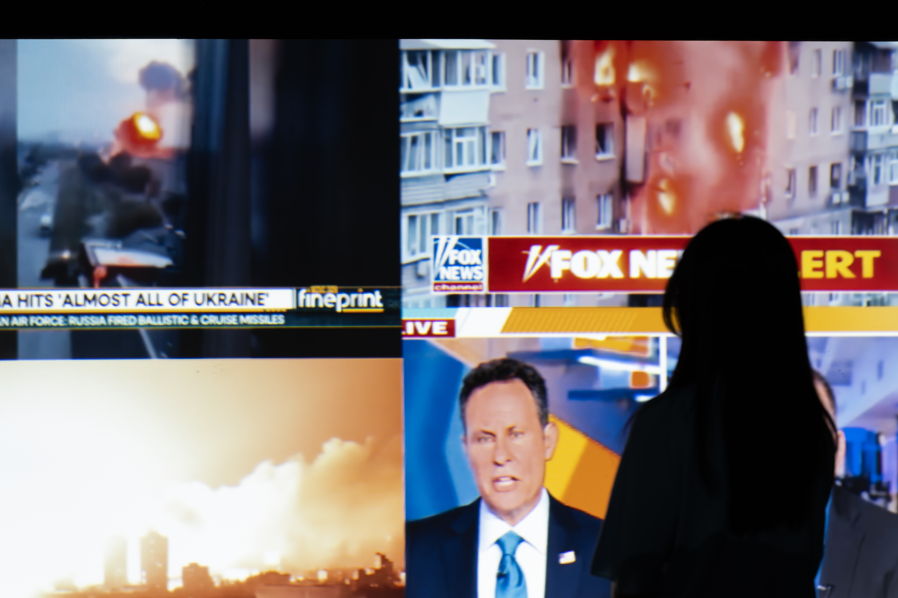
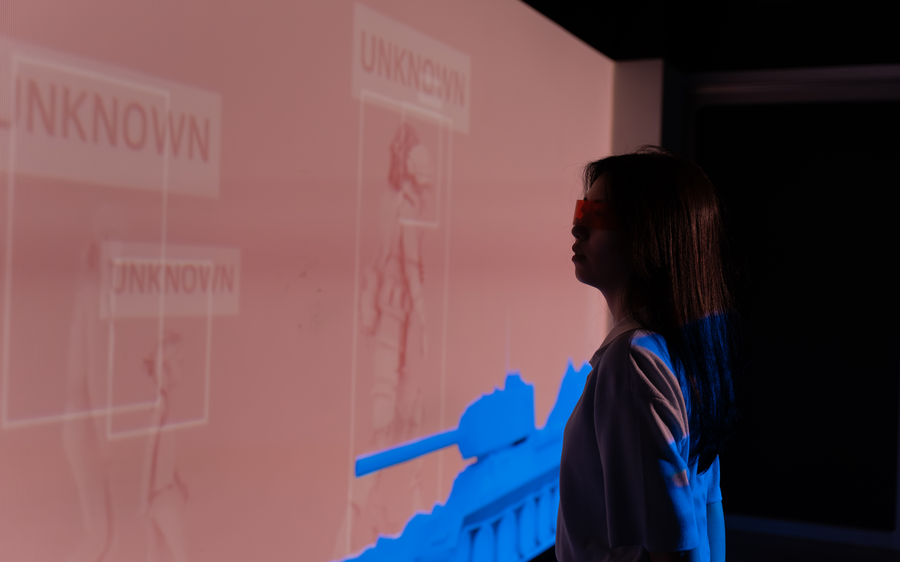
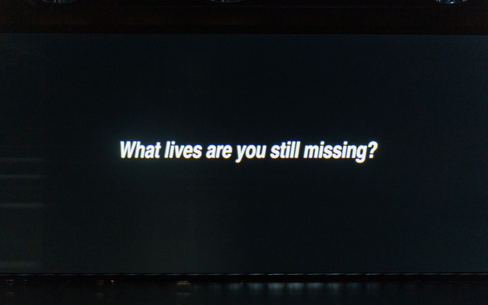

Concept
Beyond the Frame explores how visual technology reshapes the way we perceive time, empathy, and human presence. By layering media from black-and-white photography to real-time mobile footage, the work reveals both the power and the limit of visual representation.
Viewers first encounter vivid projected scenes through tinted glasses, then remove them to discover hidden layers of fragile daily life underneath. The contrast asks a direct question: what realities are we still missing?



Technological clarity can make scenes sharper, but deeper understanding does not come from definition alone. The piece argues that much of human life remains outside the lens unless we actively look for what is hidden.

Technologies Used
Midjourney was used to generate speculative visuals for early exhibition scenes. Character and environment assets were created in Cinema4D and composed in layered projections to build contrasting narratives before and after removing the tinted lens.
Real-world footage and final editing were completed in Premiere Pro to keep emotional continuity and to control pacing between immersive visuals and documentary-like moments.
Interaction Modes
Visitors are invited to see a first narrative through tinted glasses and then remove them to reveal a second, previously unseen layer. The shift transforms the viewer from passive observer to active participant.
Beyond the Frame ends with a question: "What lives are you still missing?"
